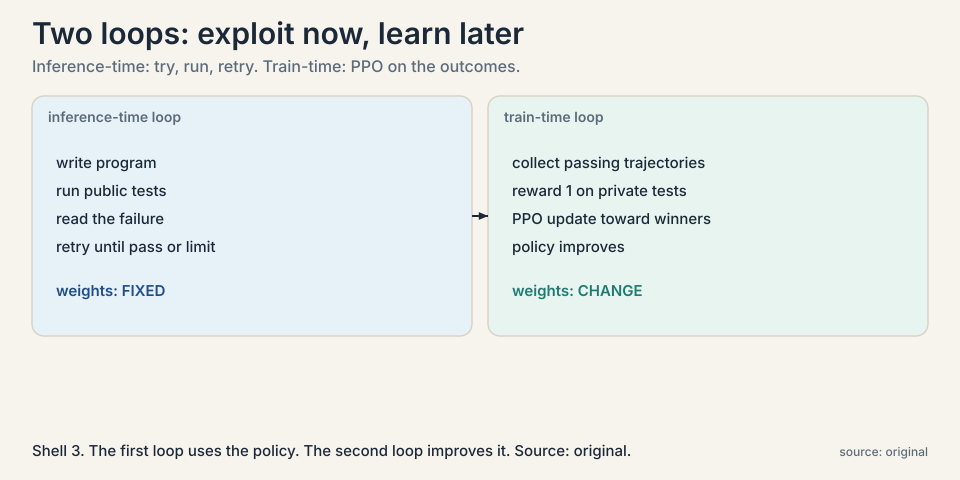
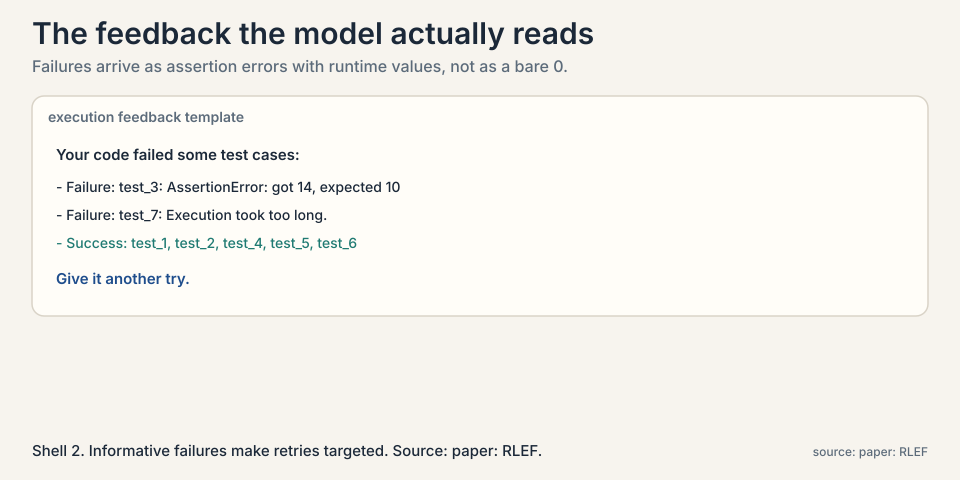
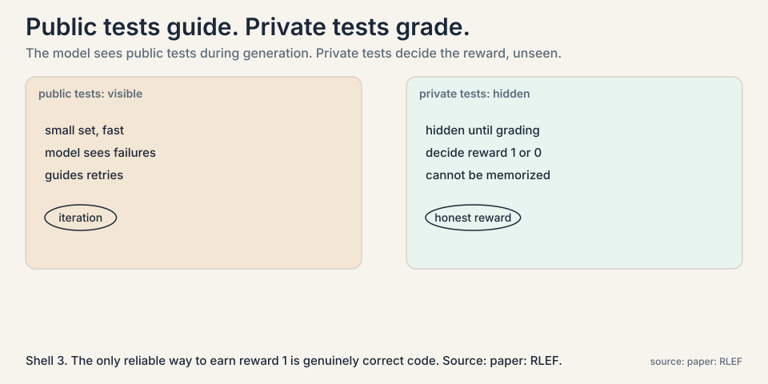
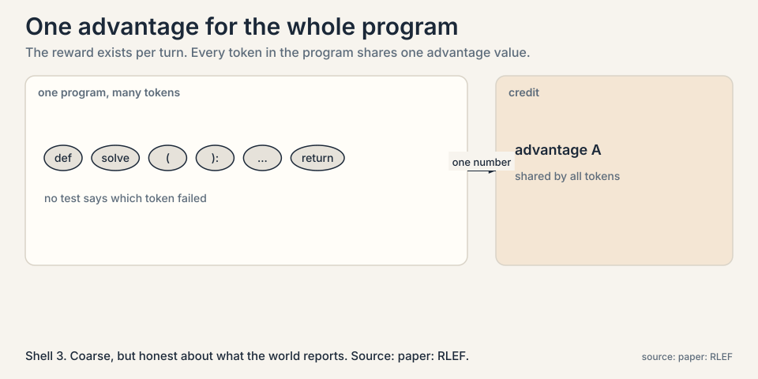
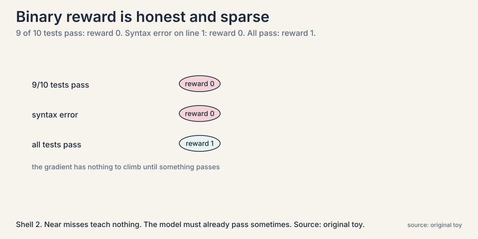

Lecture 4: Learning from Execution: The RLEF Loop
Video blocked (ad-blocker or local file mode).
Watch on YouTubeVideo not loading? Watch on YouTube
Aakanksha Chowdhery on RLEF: public tests to iterate against, private tests to score on, and execution feedback that makes edits targeted.
The problem: coding agents need a teacher
Lecture 3 gave the agent hands: it can write code and run it. Now a harder question: how does the agent get better at writing code? Human feedback is slow. But code has a built-in teacher: run it and see. A program either passes its tests or it does not. That pass/fail signal is free, fast, and honest. This chapter is about turning it into learning.
Reinforcement learning (RL) is learning from rewards. The model, called the policy, takes actions. The world returns a reward, a number saying how good the outcome was. The policy updates toward actions that earned high reward. Here the actions are generated programs, and the reward comes from executing them.
Subchapter: the RL loop in one paragraph
Three objects, one cycle. The policy is the model that acts. The environment is whatever responds: here, a code executor running tests. The reward is the number the environment returns: 1 for pass, 0 for fail. The update nudges the policy’s probabilities toward actions that earned reward. Repeat thousands of times. The policy that once guessed now writes code that passes, because passing is the only behavior the update ever reinforced.
The toy: a palindrome fix, step by step
The lecture’s example: write code that finds palindrome substrings, strings that read the same forwards and backwards. The loop runs in turns. Watch two of them.
turn 1: model writes: a straightforward palindrome checker run public tests: FAIL, execution timeout on long inputs feedback to model: "timeout on input of length 500" turn 2: model writes: an optimized version, skips redundant checks run public tests: PASS feedback to model: "all public tests pass"
The first attempt is too slow. The test output says exactly how: timeout. The model reads that feedback and writes a faster version. This is the inference-time feedback loop: try, run, read the failure, try again. No weights change yet. The model is just iterating with the compiler as its critic.

Subchapter: the inference-time loop, step by step
Then comes the training step. Collect the trajectories that ended in passing solutions. Give them reward 1, failures reward 0, a binary reward. Update the policy with RL so that pass-producing behavior becomes more likely. This is the train-time loop: the policy itself improves.
The lecture names the algorithm family as PPO, a standard policy-gradient method, and stresses the two phases: exploit the current policy with inference-time retries, then update the policy on the execution results.
Subchapter: PPO in one paragraph
PPO (proximal policy optimization) is the workhorse policy-gradient algorithm. It estimates which actions were better than average, the advantage, and nudges the policy toward them, but clips the nudge: no single update may move the policy too far. The clip is the whole idea. Without it, one lucky batch of rewards can yank the policy into a region where everything it learned breaks. With it, learning is boring and stable, which is what you want when each update costs a training run.
Subchapter: the feedback the model reads
The loop works because the feedback is informative, not just a number.

The paper’s template shows assertion errors with runtime values, which tests timed out, and which passed. “Got 14, expected 10” tells the model what to fix. A bare 0 would not. The inference-time loop is only as smart as the failure text it reads.
The trick that makes it honest: two tiers of tests
Here is the failure the paper’s design prevents. If the model practices on the same tests it is graded on, it can memorize the expected outputs instead of learning to code.

Subchapter: the two tiers, deep
The fix is a two-tier test strategy:
- Public tests: a small set, visible during generation. Fast iteration. The model sees failures here and retries.
- Private tests: hidden during generation. They decide the reward. The model never sees them, so it cannot memorize them.
The separation is doing real work. Public tests guide the search. Private tests grade it. Because the reward comes only from hidden tests, the only way to earn reward 1 reliably is to write actually correct code. The lecture calls this out as a key innovation of the self-improvement loop: the model gets execution feedback without getting the answers.
Subchapter: why memorization is the threat
A model that sees the grading tests can pass by storing input-output pairs, the way a student passes by memorizing the answer key. The behavior looks like coding skill on the benchmark and collapses on any new problem. The two-tier split is a train-test split applied to the reward itself: the public tests are the training signal the model may adapt to, the private tests are the held-out check it cannot. Any self-training loop needs this split, or it trains a memorizer.
A subtlety: who gets the credit
The policy writes code one token at a time, so the finest control is per token. But the reward arrives per turn: the whole program either passes or fails.

Subchapter: why per-token credit is impossible here
The paper computes the value function, the model’s estimate of future reward, at the turn level, using the last token of the response, and assigns a single advantage number to all tokens in the turn. Every token in a passing program shares the credit equally.
The lecture notes this is close in spirit to GSPO-style updates: reward the whole sequence, not individual tokens. It is honest about the tradeoff. Per-token credit would be more precise but the signal does not exist: no test says “this semicolon was the problem”. Turn-level credit is coarse but matches what the world actually reports.
Subchapter: what turn-level credit loses
All localization. A program that is perfect except one wrong line gets the same per-token update as a program that is wrong everywhere, since both earn reward 0. The model cannot learn “everything except line 7 was fine”. This is the price of outcome-only feedback, and it motivates process-level rewards in later work.
Where it breaks, part 1: the signal is sparse
Binary reward is a blunt instrument.

Subchapter: sparsity, worked
A program that fails 9 of 10 tests gets the same reward, 0, as one that fails all 10, and the same 0 as one with a syntax error on line 1. The model learns nothing from near misses. Work the consequence: early in training, when almost everything fails, almost every trajectory carries reward 0, and the policy has no gradient to climb. The loop needs the model to be good enough already that some trajectories pass. Bootstrapping from zero is the hard part.
The decision rule this forces: never start RLEF from a model that cannot pass anything. The paper trains Llama 3.1 models that already write plausible code, then lets execution feedback sharpen them. The base model must clear the first bar on its own, or the loop has nothing to amplify.
Where it breaks, part 2: negatives teach little
The lecture is candid: learning from negative examples is not nailed. The loop keeps the winners and drops the losers, so the model learns what success looks like but gets no structured lesson from failure. A failed trajectory contains information, which step went wrong, but the binary reward discards it. Later lectures return to this gap: process-level feedback, judging intermediate steps, is an active research area precisely because outcome-only reward wastes so much signal.
Subchapter: the shaping temptation
The obvious fix is shaped rewards: 0.7 for passing 7 of 10 tests, partial credit for partial progress. It densifies the signal, and it changes the objective. The model learns to pass easy tests while ignoring hard ones, because the reward says easy tests are worth nearly as much. Shaped rewards invite gaming. The paper’s binary choice keeps the objective clean at the cost of sparsity. There is no free option here, only the choice of which failure you prefer.
The key question, answered
Can a coding agent improve with no human labels? Yes, where execution is the teacher: public tests for iteration, hidden tests for reward, RL to absorb the wins. The lecture reports this as one of the first demonstrations that execution feedback alone can drive large gains in coding models. The paper’s headline result: Llama 3.1 8B and 70B models trained with RLEF on CodeContests compete with GPT-4-class systems across sampling budgets. [uncertain: exact solve-rate numbers are read from the paper’s Figure 1. the lecture does not quote them.]
Mapping back
| Missing piece | RLEF answer | How |
|---|---|---|
| No training signal for agents | Execution feedback | Run the code. Tests pass or fail. Free, fast, honest. |
| Memorizing the tests | Two tiers | Public tests guide retries. Hidden private tests decide the reward. |
| One-shot generation | Inference-time loop | Try, read the failure, retry until pass or turn limit. |
| Winners discarded | Train-time RL | PPO on binary rewards. Turn-level value shares credit across the program’s tokens. |
The honest price
The loop demands executable tests for every training problem. Where tests do not exist, there is no signal. The binary reward is sparse: near misses teach nothing, and failures are discarded rather than diagnosed. And the whole thing assumes a base model strong enough to pass sometimes. A model that never passes never learns. RLEF closes the loop for code. The next chapters ask how far the same idea reaches: planning over many attempts, sampling at massive scale, and training on reasoning itself.
Go deeper
- How AI agents actually work, one loop tested on real models: execution-feedback loops measured on planted bugs, with failure modes (context rot, bad stop rules) the lecture names. https://www.youtube.com/watch?v=PEssdKXOobU
- RLEF: Grounding Code LLMs in Execution Feedback with Reinforcement Learning: the two-tier test strategy and hybrid token/turn-level policy details. https://arxiv.org/abs/2410.02089
- Schulman et al., PPO (2017): the policy-gradient algorithm family the paper builds on. https://arxiv.org/abs/1706.03761
Reinforcement Learning from Execution Feedback. A coding agent generates a program, runs it against public tests, reads the failure output, and retries. Programs that pass earn reward 1 on a hidden set of private tests. Failures earn 0. An RL update, PPO in the paper, then shifts the policy toward pass-producing behavior. Two loops: inference-time retries exploit the current policy, train-time updates improve it. To block memorization. If the model saw the grading tests during generation, it could learn their expected outputs by heart instead of learning to code. Public tests are for fast iteration. Private tests, hidden until grading, decide the reward. The only reliable way to earn reward 1 is genuinely correct code.
Problem: write a function that passes hidden tests. Inference-time loop, weights fixed: the model writes version 1, runs public tests, reads “timeout on input of length 500”, writes a faster version 2, public tests pass. Train-time loop, weights change: version 2 runs against hidden private tests. If it passes, the trajectory earns reward 1 and PPO nudges the policy toward version-2-like behavior. Next problem, the policy writes version-1 code that is already closer to version 2. The first loop exploits. The second loop learns. The inference-time loop converges to code that passes weak tests and fails hidden ones: reward 0, no learning. Weak public tests waste the retry budget on the wrong target. The private tests stay honest, but the loop never reaches them with anything good. Test quality gates the whole method.
Because the reward exists only at the turn level: the whole program passes or fails. No test reports which token caused the failure, so per-token credit would be invented precision. The paper assigns one advantage value, computed from the last token of the response, to every token in the turn. Coarse, but honest about what the world reports. All localization. A program that is perfect except one wrong line gets the same per-token update as a program that is wrong everywhere, since both earn reward 0. The model cannot learn “everything except line 7 was fine”. This is the price of outcome-only feedback, and it motivates process-level rewards in later work.
It caps how far one update may move the policy. PPO estimates each action’s advantage, how much better it was than average, and shifts probability toward good actions, but the shift per update is clipped to a small range. Without the clip, one lucky batch, a few fluke passes, could yank the policy somewhere its previous learning breaks. The clip trades speed for stability: many small safe steps instead of a few large risky ones. Because the reward is binary and sparse. Most batches are mostly zeros with a few ones. An unclipped update would chase those few ones aggressively and collapse the policy onto whatever accidentally passed. The clip keeps the policy near what already works while it absorbs the wins slowly.
The loop trains on winners and discards losers. A failed trajectory, which test failed and why, carries information the binary reward throws away. Some papers try to learn from failures, but the lecture reports no settled method. In practice this means the loop is sample-hungry: it needs enough passes to learn from, and it learns nothing from the far more numerous failures. You could, and that densifies the signal, but it changes what is being optimized: the model may learn to pass easy tests while ignoring hard ones. Shaped rewards invite gaming. The paper’s binary choice keeps the objective clean at the cost of sparsity. There is no free option here.
Because the inference-time loop reasons from the failure text, not the reward number. “AssertionError: got 14, expected 10” tells the model the output is wrong and by how much. “Execution took too long” says the algorithm is slow, not wrong. A bare pass/fail would leave the model guessing what to change. Informative failures make retries targeted instead of random. Misleading retries. A stack trace from the test harness instead of the program sends the model fixing the wrong code. A timeout with no input size gives no clue about the complexity bug. Teams building these loops spend real effort on feedback formatting, because the model’s retry quality is bounded by what the failure text says.
The verifier. RLEF needs executable tests with known correct outputs for every training problem. For SQL, that means a database with fixed contents and gold queries whose result sets define correctness. Two problems: result-set equality is stricter than semantic correctness (two different valid queries can return the same rows, and order may differ), and the database contents are the private tests, which must stay hidden while the agent iterates. Build the gold result sets first, freeze the database, and accept that some correct queries will earn 0. The loop still works, but the reward is noisier than in code. Public: a small set of example queries with visible outputs for iteration. Private: the full gold result sets, hidden until grading. Same anti-memorization logic: the agent must write queries that are actually correct, not queries that parrot the examples.
Recap: the whole lesson on one screen
- Code has a free teacher. Run the program. Tests pass or fail. No human needed.
- The toy. Palindrome finder fails public tests with a timeout, reads the feedback, writes a faster version, passes.
- Two loops. Inference-time: try, run, retry. Train-time: RL on the outcomes, PPO, policy improves.
- Two tiers. Public tests for iteration, private hidden tests for the reward. Memorization blocked.
- Binary reward. Pass is 1, fail is 0. Simple, honest, sparse. Never start from a model that passes nothing.
- Turn-level credit. One advantage value for all tokens in the program. Matches what the world reports. Loses localization.
- Sparse signal. Near misses earn 0 like total failures. Shaped rewards densify but invite gaming. Pick your poison.
- Negatives wasted. Failures are discarded, not diagnosed. Learning from them is an open problem.
Official sources and further reading
Official: - CS329A Part 4: Learning from Feedback with Tools and Code (Autumn 2025): the lecture this chapter follows. link - RLEF: Grounding Code LLMs in Execution Feedback with Reinforcement Learning. https://arxiv.org/abs/2410.02089
Further reading: - Schulman et al., PPO (2017): the policy-gradient algorithm family the paper builds on. https://arxiv.org/abs/1706.03761
Caveats from these sources. Algorithmic details (the exact PPO variant, the hybrid policy formulation) are summarized from the lecture, not re-derived. Read the paper for the equations. The “first demonstration” framing is the lecture’s, for coding LLMs with execution feedback in this form. RLEF solve-rate comparisons are read from the paper’s figures, not quoted in the lecture.
Connections to the other courses
- CS329A L03: the inference-time half of this chapter: the try-run-retry trajectory is a ReAct loop whose tool is code execution.
- CS329A L06: the train-time half generalized: STaR applies the same keep-the-winners idea to reasoning traces.
- CS329A L07: the missing piece: judging intermediate steps, not just outcomes.
- CS329Z: building the harnesses: sandboxed code execution and test infrastructure for agents.